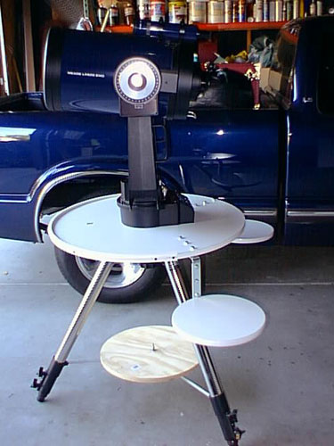
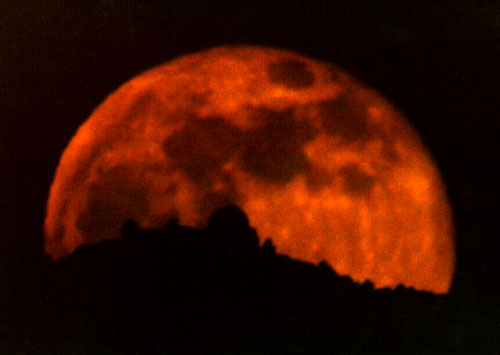

SJAA Ephemeris September 2000 |
SJAA Home |
Contents |
Previous |
Next
SJAA Ephemeris September 2000 |
SJAA Home |
Contents |
Previous |
Next
Bits and Pieces
For Sale
Orion 10" Dobsonian, black, with Orion 10mm and 25mm eyepieces and Telrad. 2 years old. Asking $650 or make offer. Richard Ignacio, (408) 274-5299.
Here's another creation from Denny Woolaghan. He purchased a table top with smaller pods from Home Depot - a 30" laminated circle with two 12" laminated circles, and one 18" raw wood circle. The two 12" circles will be used for his computer and accessories. They're attached with steel L-brackets. Velcro strips should prevent any slippage. Three bungee cords connect the table top to the 18" bottom circle and give the unit balance.
|

|
The full moon rises behind Lick Observatory. Photo by Paul Graves, contributed by David Smith. He reports, "This picture didn't just happen. He figured out the angles and waited for the right month." The photo was taken from the Princeton Plaza shopping mall parking lot at the prime focus of Paul's 8-inch Celestron SCT.
|

|
Mail to:
Editors
Copyright © 2000 San Jose Astronomical Association
Last updated:
February 05, 2002
Previous | Contents | Next